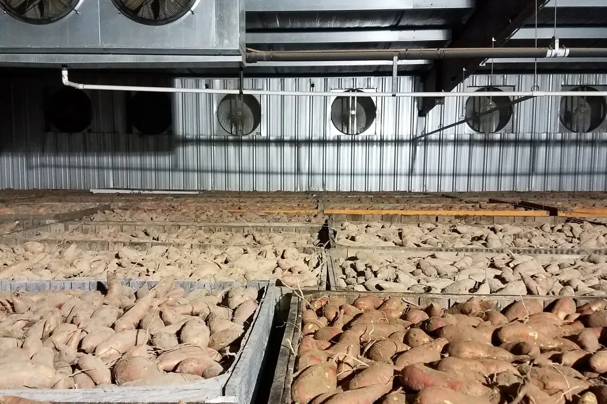
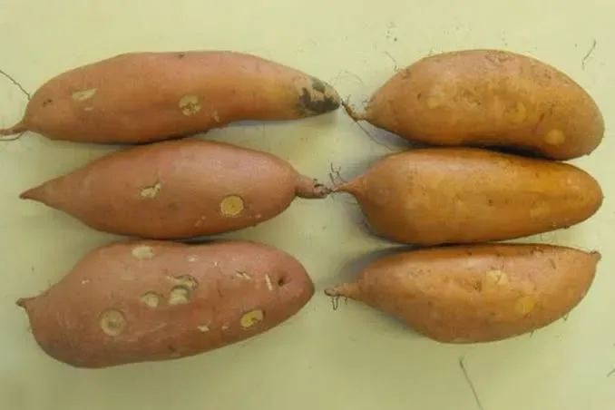
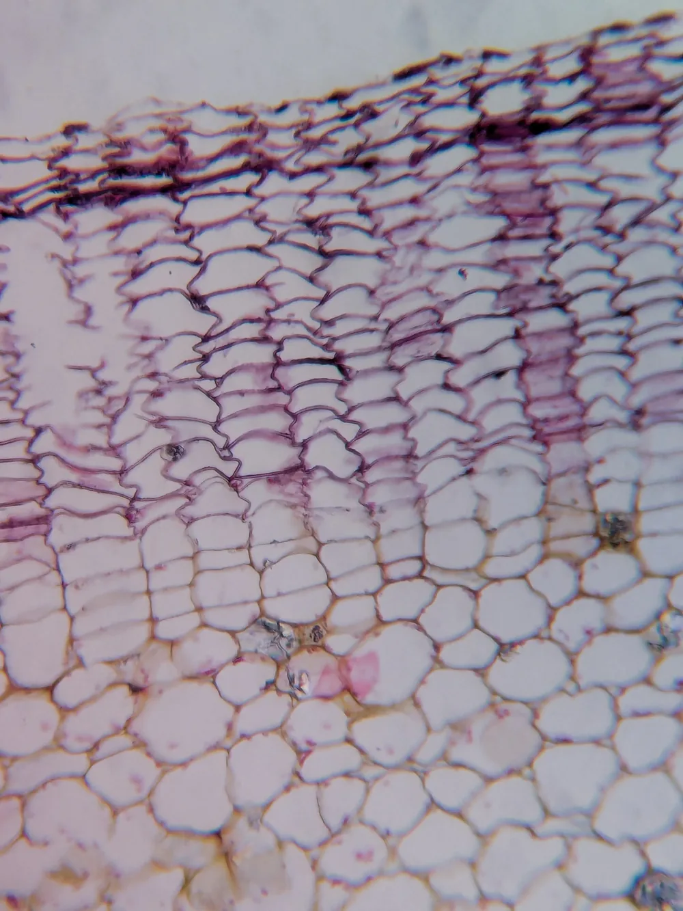
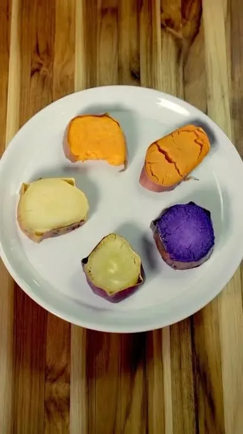
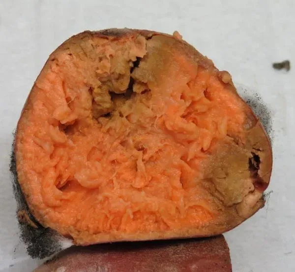
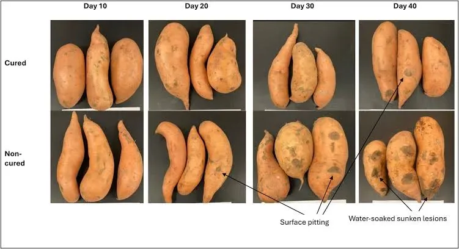

Аннотация Кюринг (лечебный период) — критически важный этап послеуборочной физиологической адаптации клубнекорней батата, определяющий их пригодность к длительному хранению, устойчивость к фитопатогенам и потребительские качества. Ниже рассмотрены механизмы раневого гистогенеза, кинетика амилолиза, теплотехнические расчёты вентиляции и профилактика инфекционных и абиотических патологий.

1. Роль послеуборочного кюринга в сохранности и органолептике корнеплодов
Ботаническая специфика покровных тканей
В отличие от картофеля (Solanum tuberosum) — видоизменённого подземного побега (стеблевого клубня) с глазками и способностью зеленеть на свету, — запасающий орган батата с ботанической точки зрения представляет собой разросшийся боковой корень. Это фундаментальное морфологическое различие определяет специфику уборки:
- Скашивание ботвы перед копкой лишь облегчает механизированную уборку, но не индуцирует суберинизацию и загрубение покровных тканей в почве, как у картофеля.
- Свежевыкопанный батат покрыт очень тонкой, деликатной нативной перидермой, которая легко сдирается при малейшем трении о рабочие органы копалок или стенки тары.

Экономическая значимость лечебного периода
- Потери в цепочке поставок: в среднем в США 20–25% урожая теряется на этапах кюринга и хранения из-за усушки и гнилей, ещё 5–15% — при транспортировке и дистрибуции.
- Микробиологическая порча: без послеуборочной защиты поражение мягкой ризопусной гнилью (Rhizopus stolonifer) способно уничтожить до 45% урожая.
- Транспирация (усушка): некюрингованные корни теряют 2–5% массы в месяц, тогда как прошедшие лечебный период — лишь 1–2%.
- Внутренние некрозы: специальные режимы кюринга минимизируют внутренние патологии, например внутренний некроз у сорта Ковингтон (Covington), который приносит отдельным хозяйствам убытки свыше $1 000 000 за сезон.
Три биотехнологические задачи кюринга
- Истинное заживление механических повреждений (порезов, вмятин, участков содранной кожицы) — синтез лигнифицированного и суберинизированного барьеров с последующей закладкой раневой перидермы.
- Укрепление интактной нативной перидермы («фиксация кожицы») — способность выдерживать гидромойку, калибровку и фасовку спустя недели и месяцы после закладки.
- Запуск ферментативной трансформации углеводов — частичный гидролиз крахмала до сахаров и формирование пула амилолитических ферментов, обеспечивающих десертную сладость и текстуру после кулинарной обработки.
2. Гистогенез и молекулярная биохимия раневой перидермы
Первичная реакция и «ложная защита» латекса
Механическое повреждение покровной ткани запускает строго детерминированный во времени каскад биохимических и цитологических реакций — активный, транскрипционно регулируемый процесс, а не пассивное высыхание раны. В момент травмирования из вскрытых млечников выделяется липкий латекс, полимеризующийся и высыхающий за несколько часов.
Клеточная сигнализация и зона десикации
- Кальциевый и этиленовый сигнал: фрагменты разрушенных клеточных стенок выступают элиситорами, вызывая приток ионов Ca2+ в цитоплазму соседних клеток и активацию протеинкиназного каскада. Индуцируется АЦК-синтаза и выработка раневого этилена, запускающего защитную транскрипцию.
- Слой десикации: внешние слои повреждённых паренхимных клеток теряют влагу и отмирают. Толщина мёртвого слоя зависит от дефицита влаги: при низкой относительной влажности (например, около 71%) слой становится слишком глубоким, ухудшая лёжкость и создавая субстрат для некротрофных грибов.
- Метаболический скачок дыхания: уже через 2 часа после ранения дыхание резко растёт, удваиваясь за первые 20–24 часа; с лаг-фазой около 12 часов стартует локальная деградация крахмала до глюкозы при участии α- и β-амилаз.
Фазы формирования защитного барьера
Хотя процессы заживления нередко объединяют термином «суберинизация», у батата первой и наиболее важной реакцией является лигнификация клеточных стенок, стартующая уже через 24 часа после травмы и не требующая деления клеток. Сравнительный анализ у сорта Джуэл (Jewel) показал, что раневая ткань батата суберинизирована слабее нативной перидермы, поэтому на ранних этапах основную барьерную роль берёт лигниновый щит.

| Анатомический слой (снаружи вглубь) | Фаза | Процессы | Функция |
|---|---|---|---|
| 1. Слой десикации и поверхностный латекс | 0–12 ч | Экссудация и высыхание млечного сока; потеря тургора и гибель наружных клеток; Ca2+-сигнал и синтез раневого этилена | Первичное подсыхание раны; не защищает от влагопотери и микробной инвазии |
| 2. Зона лигнификации (флороглюцин-позитивная) | 1–3 суток | Всплеск раневого дыхания и распад крахмала; транскрипция генов фенилпропаноидного пути (IbPAL, Ib4CL), отложение лигнина без деления клеток | Главный первичный щит: резко снижает транспирацию и блокирует ферментативную мацерацию тканей |
| 3. Зона внутриклеточной суберинизации | 3–5 суток | Биосинтез длинноцепочечных жирных кислот и фенольных матриксов; выстилка гидрофобными ламеллами суберина | Полная водо- и газонепроницаемость пограничной зоны |
| 4. Раневая перидерма (феллоген и феллема) | 4–7 суток | Меристематическая активность под барьером; периклинальные деления раневого камбия с отложением пробковых клеток | Завершение истинного заживления; постоянная покровная ткань, сопоставимая с нативной кожицей |
Молекулярный каскад лигнификации и суберинизации
- Экспрессия генов и ферментов: синтез раневого лигнина идёт через активацию генов фенилпропаноидного пути (IbSKDH, IbADT/PDT, IbPAL, Ib4CL) и ферментов — PAL, C4H, 4CL, CAD, POD.
- Полимеризация монолигнолов: накопление хлорогеновой кислоты и других фенольных предшественников ведёт к полимеризации монолигнолов с p-гидроксифенильными и гваяцильными остатками (доля сирингильных единиц ниже примерно в 3 раза, чем в нативной перидерме). Формируется непрерывное утолщённое кольцо вокруг раны.
- Закладка суберина и раневого камбия: клетки пограничной зоны формируют субериновые ламеллы. На 4–7 сутки паренхимные клетки претерпевают периклинальные деления, образуя раневой феллоген, который откладывает кнаружи ряды феллемы — полноценную раневую перидерму.
Биохимическая стимуляция кюринга аскорбиновой кислотой
- Обработка повреждённых клубнекорней раствором аскорбиновой кислоты 20 г/л перед заживлением (25 °C, влажность 85–90%) снижает уровень малонового диальдегида и перекисного окисления мембранных липидов.
- Антиоксидантная защита вместе с ап-регуляцией генов фенилпропаноидного метаболизма повышает активность пероксидазы (POD) в раневой зоне на 57,0% за первые сутки (и на 18,3–20,1% к 5–7 суткам), ускоряя депозицию лигнина и суберина и сохраняя более светлую окраску покровной ткани.
3. Энзимология углеводного обмена и формирование вкусового профиля
Двухфазная кинетика конверсии крахмала
Свежеубранные клубнекорни отличаются высоким содержанием крахмала, низкой концентрацией свободных сахаров и суховатой, крахмалистой консистенцией при запекании. Распространённый тезис о «превращении крахмала в сахара за 5–7 дней в камере кюринга» неточен — биохимический анализ выявляет двухфазную кинетику:
- Фаза триггерной индукции (кюринг, 5–7 суток): абсолютные концентрации крахмала и растворимых сахаров меняются умеренно (прирост сахарозы, глюкозы и фруктозы идёт в основном на поддержание всплеска раневого дыхания). Короткая фаза теплового кюринга — метаболический триггер, запускающий накопление сахарообразующих ферментов.
- Фаза созревания при хранении (6–8 недель при 13–16 °C): базовые сладкие ноты возрастают после кюринга, карамельные оттенки формируются к 20-м суткам, а полномасштабная конверсия крахмала и исчезновение крахмалистого привкуса достигаются к 6–8 неделям (42–68 суткам) хранения.
Ферментные системы и кулинарный термогидролиз
Углеводный баланс регулируется четырьмя ферментными системами: α-амилазой, β-амилазой, сахарозосинтазой и вакуолярной инвертазой (контролируется белковым ингибитором IbInvInh2). Главный скачок сладости происходит не в сыром корне, а при термической обработке (запекание, варка на пару, сушка) за счёт синергии накопленных амилаз с клейстеризацией крахмала:
- Клейстеризация (≥ 60–77 °C): нативные крахмальные гранулы разрушаются, открывая субстрат для ферментов.
- α-амилаза (оптимум 71–75 °C): разрывает внутренние α-(1,4)-связи, быстро снижая молекулярную массу крахмала и образуя декстрины.
- β-амилаза (стабильна при 65 °C, инактивация > 75 °C): отщепляет мальтозу с нередуцирующих концов до точек ветвления с α-(1,6)-связями.
Упрощённая стехиометрическая модель гидролиза крахмала до мальтозы:
Влияние факторов и сортовая классификация
Дисперсионный анализ вклада факторов в активность β-амилазы и выход мальтозы при термообработке:
- 50% — температурный режим обработки;
- 26% — генотип (сорт);
- 11% — время термического воздействия;
- 8% — взаимодействие «генотип × температура».
По кулинарным свойствам сорта делят на две группы:
- Десертные, влажная мякоть (moist-fleshed): высокая амилолитическая активность, быстрое разжижение крахмала. Оранжевомякотные сорта, богатые β-каротином: Борегард (Beauregard), Ковингтон (Covington), Джуэл (Jewel), Орлеан (Orleans) и Бельвю (Bellevue).
- С сухой, плотной мякотью (dry-fleshed): беломякотные и антоциановые (фиолетовые) сорта, например Стокс (Stokes) и Окинавский (Okinawan), которые даже после кюринга сохраняют высокую долю резистентного крахмала, умеренную сладость и рассыпчатую текстуру.

4. Технологические регламенты, термодинамика дыхания и вентиляция
Полевые и предуборочные требования
Батат — культура тропического генезиса: рост прекращается ниже 10 °C, критический порог холодового повреждения корней в почве — 10–13 °C (50–55 °F).
- Сроки и влажность почвы: уборку завершают до заморозков, пока температура почвы на глубине залегания корней не ниже 13–15 °C, а поливы прекращают минимум за 10 дней до копки.
- Механическая амортизация: элеваторная цепь должна нести достаточный слой почвы, амортизирующий удары, а высота падения — быть минимальной.
- Запрет на предкюринговую мойку: гидромойка травмирует неокрепшую перидерму и разносит споры грибов. Допустимо лишь осторожное сухое смахивание комьев земли и немедленная отбраковка разрезанных и побитых корней.
- Санитария и скорость закладки: тару и поверхности хранилища дезинфицируют раствором активного хлора 100–200 ppm либо фумигацией. Закладку проводят в первые 1–2 часа (максимум — в первые сутки).
Регламентные параметры микроклимата
| Этап | Температура | Влажность (RH) | Длительность | Результат |
|---|---|---|---|---|
| Интенсивный промышленный кюринг | 27–29 °C (допустимо до 30 °C) | 85–95% (оптимум 90%) | 4–7 суток (в современных камерах 3–5; до 10 при сильном обдире) | Непрерывная мягкая вентиляция (NHV); быстрая лигнификация; усушка ≤ 5–8% |
| Адаптивный кюринг (дефицит мощности обогрева) | 18–24 °C либо цикл в теплице (29 °C днём / ≥ 21 °C ночью) | 80–90% (увлажнение полов, укрытие ящиков) | 14–21 сутки | Замедленный синтез лигнина и суберина; ниже 24 °C растёт потеря массы |
| Долгосрочное хранение | 13–16 °C; для подавления прорастания 13–14,5 °C | 80–90% | 3–6 месяцев (при идеальном контроле до 12–15) | Минимум дыхания; завершение конверсии крахмала за 6–8 недель; покой меристем в темноте |
Термодинамика дыхания и расчёт тепловыделения
- В период кюринга (25–29 °C): дыхание некюрингованного батата при 25 °C достигает 27–35 мл CO2/(кг·ч), а в первые 24 часа раневого стресса при 29 °C может удваиваться.
- В период хранения (10–15 °C): после кюринга при 15 °C дыхание стабилизируется на 10–12 мл CO2/(кг·ч) против 15 у некюрингованных; при 10 °C — около 7 мл CO2/(кг·ч).
Перевод объёма CO2 в тепловую мощность (теплоту дыхания Q):
Q (BTU) = R(CO2) × 440 [BTU / т · сутки]
где R(CO2) — интенсивность дыхания, мл CO2/(кг·ч)
Контроль газового состава и вентиляция
- Критический порог кислорода (O2 > 3%): при недостаточной вентиляции в первые сутки концентрация O2 может упасть ниже 3%. Гипоксия блокирует суберинизацию и лигнификацию, переключает метаболизм на анаэробное спиртовое брожение и необратимо портит вкус.
- Системы воздухообмена (NHV): горизонтальная вентиляция отрицательного давления равномерно протягивает кондиционированный воздух сквозь паллетные контейнеры. Зазоры между рядами и стенами — 15–30 см (6–12 дюймов).
- Предотвращение точки росы: влажность удерживают в 85–95%, не допуская 100% RH и капельного конденсата — плёнка свободной воды мгновенно провоцирует плесень и мягкие гнили. Кюринг при 50% RH удваивает потери от гниения по сравнению с 82% RH.
- Малые хозяйства: перфорированные ящики в отапливаемых подвалах, гроутентах или каркасных камерах из ПВХ-труб с плёнкой, бытовые обогреватели и увлажнители, пролив бетонных полов. Для микропартий — двухуровневая укладка под влажным полотенцем или один слой в джутовых мешках в тёплом затенённом помещении.
Маркеры завершения кюринга
- Тактильный тест прочности перидермы: два корнеплода с лёгким нажимом трут друг о друга; если кожица сдирается или скользит — процесс продолжают, если остаётся интактной — кюринг завершён.
- Морфологический индикатор: появление единичных коротких ростков (менее 6 мм, 1/4 дюйма) на нескольких корнях сигнализирует о прохождении фазы. Передержка при высокой температуре вызывает массовое прорастание, потерю массы, сморщивание и внутреннюю губчатость мякоти.
5. Фитопатологический контроль и профилактика расстройств
Инфекционные раневые патологии
Главный вызов послеуборочной обработки — раневые грибные и бактериальные инфекции: ризопусная мягкая гниль (Rhizopus stolonifer), фузариозная поверхностная и корневая гнили (Fusarium solani), бактериальная мягкая гниль (Erwinia chrysanthemi), парша (scurf).
Биомеханика инфицирования Rhizopus stolonifer. Споры зигомицета не способны преодолеть интактную перидерму и требуют открытых ворот инфекции. Вероятность заражения критически зависит от характера травмы:
- Гладкие порезы и царапины инфицируются реже — на гладком срезе разрушается минимум клеток и нет достаточного пула питательных веществ для прорастания спор.
- Ударные вмятины и ушибы размозжают паренхиму, которая обильно выделяет клеточный экссудат — идеальный индуктор прорастания спор.
Даже умеренно устойчивые коммерческие сорта, такие как Борегард (Beauregard), подвержены вспышкам при грубой транспортировке, а высокосахаристые экспортные сорта крайне восприимчивы. Немедленный кюринг при 29 °C и 90% RH формирует лигнифицированный барьер быстрее, чем споры колонизируют ткани, исключая потери без синтетических фунгицидов.

Физические и композитные методы защиты
- UV-C: экспозиция 3 часа перед трёхмесячным хранением стерилизует поверхность и индуцирует эндогенную устойчивость за счёт роста активности фенилаланин-аммиак-лиазы (PAL) и синтеза защитных фенолов, обеспечивая подавление естественной инфекции R. stolonifer.
- Композитные антимикробные соединения (CAC): обработка 0,5%-ным раствором разрушает мицелий патогена и сохраняет плотность центральной части корня.
Абиотические расстройства: холод и этилен
Холодовое повреждение (Chilling Injury) и «твердая сердцевина» (Hard Core). Экспозиция корней ниже 10–13 °C вызывает фазовый переход мембранных липидов, потерю полупроницаемости мембран и рост утечки электролитов:
- Симптомы: поверхностный питтинг, водянистые некротические пятна, вторичное гниение и прогрессирующее потемнение мякоти из-за окисления фенолов.
- «Твердая сердцевина»: необратимая патология, при которой ткани (особенно вокруг проводящих пучков) после холода не размягчаются даже при длительной варке. Достаточно выдержать батат 4–7 суток при 7,5–10 °C.
- Защитный эффект кюринга: при последующем хранении при 5 °C индекс холодового повреждения у кюрингованных корней на 34% ниже, чем у некюрингованных. Однако у чувствительных сортов (например, Бельвю / Bellevue, Бонита / Bonita) кюринг не предотвращает потемнение при 5 °C, что делает минимум 13 °C обязательным.

Экзогенный этилен. Здоровые покоящиеся корни синтезируют мало этилена (около 0,1 мкл/(кг·ч) при 20 °C), но при ранении, охлаждении или загнивании — до 0,3–10 мл/(кг·ч). Соседство с активными продуцентами этилена (яблоками, луком) при 1–10 ppm стимулирует дыхание, ускоряет прорастание, вызывает накопление полифенолов (потемнение и горький привкус) и повышает риск «твердой сердцевины».
Матрица диагностики и коррекции патологий
| Дефект | Первопричина | Механизм | Коррекция |
|---|---|---|---|
| Сморщивание и усушка (> 8%) | RH < 80%, температура кюринга < 24 °C, избыточный обдув | Задержка лигнино-суберинового барьера; интенсивная транспирация | RH до 85–95%, снизить обдув, держать 27–29 °C |
| Поверхностная плесень | RH ~100% (конденсат) и застой воздуха | Прорастание спор в плёнке свободной воды на перидерме | Не допускать конденсата (RH ≤ 90–95%), усилить вентиляцию, крафт-бумага поверх ящиков |
| Водянистая мягкая гниль (Rhizopus) | Ударные вмятины; задержка кюринга; мойка до заживления | Клеточный экссудат стимулирует ростовые трубки спор | Амортизация при копке, запрет мойки, немедленный кюринг (29 °C, 90% RH), UV-C |
| «Твердая сердцевина» и питтинг | Охлаждение ниже 10–13 °C в поле, складе, холодильнике | Деградация мембран, утечка электролитов, окисление фенолов | Уборка при температуре почвы > 13 °C, хранение 13–16 °C, без бытового охлаждения |
| Преждевременное прорастание и губчатость | Передержка кюринга (> 7 суток при 29 °C), хранение > 18 °C, соседство с яблоками | Снятие покоя меристем теплом, влагой и этиленом; истощение запасов | Кюринг 3–5 (макс. 7) суток, быстрый сброс до 13–14,5 °C, изоляция от этилена |
| Кислородное удушье и бродильный привкус | Герметизация тары или отказ вентиляции при всплеске дыхания | O2 < 3%, накопление CO2, переход на анаэробную ферментацию | Перфорированная тара с зазорами 15–30 см, приток кислорода в первые 72 часа |
6. Частые вопросы
Что такое кюринг батата?
Кюринг (лечебный период) — выдержка батата после уборки при 27–29 °C и влажности 85–95% в течение 4–7 суток. За это время заживают механические повреждения кожицы, формируется раневая перидерма и резко снижается восприимчивость к гнилям.
Сколько длится кюринг батата?
Обычно 4–7 суток при 27–29 °C и влажности 85–95%. В современных камерах достаточно 3–5 суток, а при сильном обдире кожицы — до 10 суток.
При какой температуре кюринговать и хранить батат?
Кюринг — 27–29 °C (допустимо до 30 °C). Хранение — 13–16 °C, для подавления прорастания 13–14,5 °C, влажность 80–90%. Охлаждение ниже 10–13 °C недопустимо: оно вызывает холодовое повреждение и синдром «твердой сердцевины».
Можно ли мыть батат перед кюрингом?
Нет. Гидромойка свежевыкопанных корней травмирует неокрепшую перидерму и разносит споры грибов по раневым поверхностям. Мойку и калибровку проводят только перед отгрузкой в торговую сеть.
7. Производственное резюме и контрольный регламент
- Защита перидермы при копке: достаточная почвенная подушка на сепарирующих лентах, отказ от предкюринговой гидромойки (мойка и калибровка — только перед отгрузкой).
- Оперативная закладка: в продезинфицированную камеру (27–29 °C, RH 85–95% без капельного конденсата) в первые часы после извлечения из почвы.
- Интенсивный газообмен в первые 24–72 часа: отвод метаболического тепла (> 3200–4200 ккал/(т·сутки)) и CO2 принудительной вентиляцией при O2 выше 3%.
- Своевременный перевод на хранение: при подтверждении фиксации кожицы и единичных проростках до 6 мм (на 4–5 сутки) температуру снижают до 13–16 °C.
- Исключение холодового стресса и выдержка вкуса: не ниже 10–13 °C на всех этапах логистики и ритейла, выдержка не менее 6–8 недель перед реализацией для полного раскрытия десертной сладости.
Смотреть каталог сортов Прайс-лист
Читайте также
- Выращивание батата — агротехника от посадки до уборки.
- Рецепты из батата — запечённый батат, чипсы, цукаты и выпечка.
- Все статьи — раздел «Полезное».